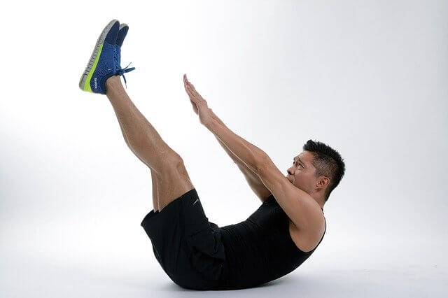

過度訓練之訓練組數與肌肥大
減肥的方式百百種，在初期或許會使用相對極端手段來促使減重效果，但在後期我認為找出適合自己的減肥菜單並且維持下去，才是讓減肥效果延續下去的重要方法。
我們都知道要增肌（肌肥大）最重要的關鍵就是慢慢提高訓練量，但是訓練量太多又容易過度訓練，所以到底要怎麼樣找到適合自己的訓練量呢？我們就給他看下去。
肌肉需要足夠的訓練量來達到增肌的效果，但是過高的訓練量會讓身體來不急修復，所以我們在增肌過程中要做的就是找到“適中”的訓練量，然後慢慢增加到最高訓練量限制，才不會一下就過度訓練。
首先要先了解兩個詞，叫做最大修復訓練組數，跟最小維持訓練組數。（大多以8-12下一組來講）
最低維持訓練組數對於訓練者來講大約是在10組左右（新手更低，老手更高），高於維持訓練組數，就有機會增肌。
比較重要的是：最大修復訓練組數限制大約是在20組左右（新手更低，老手更高）。超過修復訓練組數限制，肌肉不容易長出來甚至容易過度訓練。
限制組數其實在研究上還沒有很確實的一個數字，因為大部分都是拿訓練中手（練了1~2年）來做研究。但我們知道的有以下幾點:
1.訓練中手的限制大約就是在20組左右。訓練老手練超過20組是有可能有幫助的。
2.越大的肌群通常修復會越久，但是可以承受的訓練量也越高。所以腿部也許可以練到23~25組也能承受得了，二三頭肌可能練個17~18組就差不多
3.修復組數限制會被生活狀況影響。像是飲食、睡眠、飲酒、壓力之類的。

過度訓練之研究怎麼說？
以上研究把健身中手（練了1~2年）分成兩組，高訓練量組與中訓練量組。每個部位大約是2個主要動作，2個輔助動作。
主要動作的話高訓練量都是10組10下，中訓練量是5組10下。次要動作，兩組都做8組10下。等於是高訓練量組每個部位一星期練28組，中訓練量組每個星期練18組。
作者本來是預測高訓練量的會進步比較多，但是照結論來看，肌肥大效果兩組是差不多的。
更神奇的是中訓練量的人他們力量成長較多，身體組成進步稍多（軀幹非脂肪組織、手臂肌肉量）。
會造成這個結果的主要原因是因為太多的組數會讓身體來不急修復，也無法進步。
這研究告訴我們的是：
1.每個不同階段的訓練者，做的組數應該要不同。
2.使用適合自己的訓練量，可以增加更多肌肉與力量。
3.不是舉越多越好。應該要依自己的能力去安排。